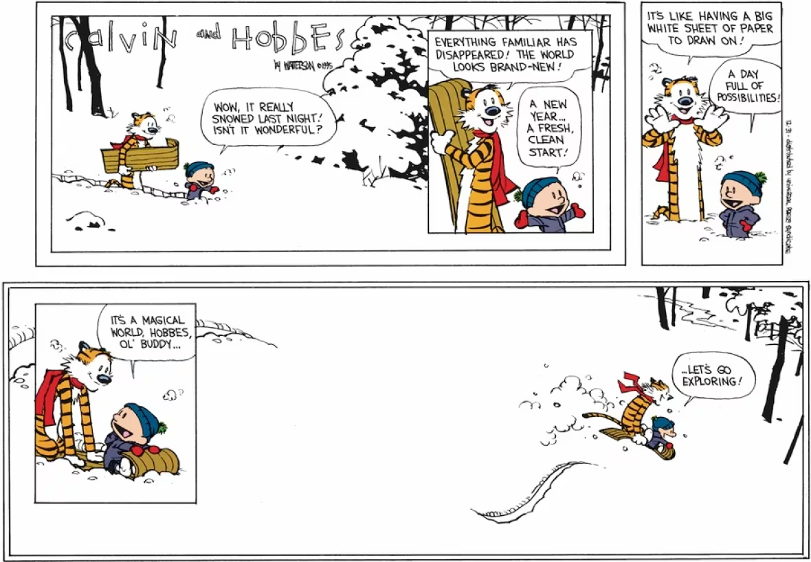

There are 2 good reasons to build a startup:
- To create something remarkable
- To make enough money so you never have to work again
The trade-off you make when bootstrapping is that while your earnings ceiling is probably lower, option #2 becomes viable a lot sooner.
So, I’m retiring for a tad.
I realized I can fully live off my weekend-project startup. So today is my last day at my full-time job. The business finally makes enough to pay my bills and runs almost entirely on autopilot. Which means that after 2.5 years of working weekends I don’t have to do anything besides paying my taxes and putting on sunscreen in the morning.
Will I actually stop working long-term? Doubt it. I still love consumer tech, and I think I’ve got another few decades of building in me.
For now, though, I’ve earned a vacation. Maybe I’ll chase the summer and visit friends in Vietnam, or my team in Pakistan. Realistically I’ll stay in NYC and soak up the cold. Spend more time making dinner for friends.
I’ve always joked about being a stay-at-home husband but now it could be a reality. Waking up at 10, going for a jog, then reading until the afternoon can be my every day, if I want it to. Hack on projects and hobbies that have no commercial use - it’s been so long since I’ve had a hobby. Get more tattoos, discover more music. Or just dangle my feet over the abyss long enough to build some peace with my own inner monologue.
And since responsibilities don’t get any lighter with age, I might as well give it a spin now.
It’s been 4 years of working on startups on the weekends, 8 years working full-time, and over 12 years since I started my first part-time job. That summer 12 years ago was my last summer vacation. 3 months of unstructured time, no real responsibilities or consequences, no pressure to be building towards some future. My dad had bought a new computer - and I hacked in by extracting the hash and brute-forcing it on my own laptop until I got the password. Most days my parents would leave for work and I would veg out and play Fallout New Vegas. The game is built around factions, and as you progress you eventually help one faction take over. Towards the end there’s a quest called “No gods, no masters” that exists largely as a failsafe. If you manage to nuke every faction, there’s still an option to complete the game on your own, though it’s not a “good” ending by any means.
There’s a joke in there somewhere about founders. Is it really a better path if you succeed? Or are you just too dysfunctional to make it elsewhere? Time will tell. For now I’m excited for my winter vacation.
If you have any suggestions for how to spend my time, do let me know.
